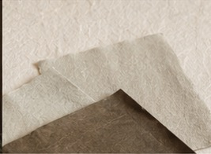

Our Mission
We keep what the world
is in a hurry to forget.
Soil is a quarterly magazine devoted to the slow texture of Korean culture — its food, its craft, its places, and the people who tend them. We named it for the thing beneath everything else. Soil is where culture begins: the field that becomes a meal, the clay that becomes a bowl, the ground a house is set upon. It is humble, and it is everything.
It began in Seoul, out of a simple unease — that the everyday was slipping away faster than anyone was writing it down. The recipes half-remembered, the workshops closing, the quiet places paved over. We started Soil to slow down and look long, to give these lives the room they deserve.
We believe the everyday is worth keeping. Not frozen behind glass, but lived in — a little worn, passed from hand to hand. Each issue we travel slowly through Korea to find the makers, cooks, and quiet places where tradition is still being written. There are no listicles here, no rankings, nothing that asks you to hurry. Only long looks at the things that last.

Slow down. Look long.
Stay close to the ground.
Mailing List
Join our mailing list for future events, upcoming releases, and other exciting news.
Masthead
Editor-in-Chief
Han Yura
Creative Director
Jung Doyun
Photography
Lee Sangwoo
Features Editor
Park Jihye
Korean Edition
Seo Hana
Publisher
Soil Press, Seoul
For stories, partnerships, and stockist enquiries:
hello@soilmagazine.kr